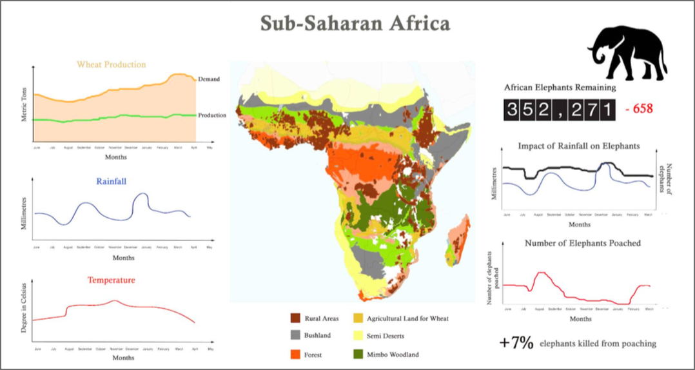
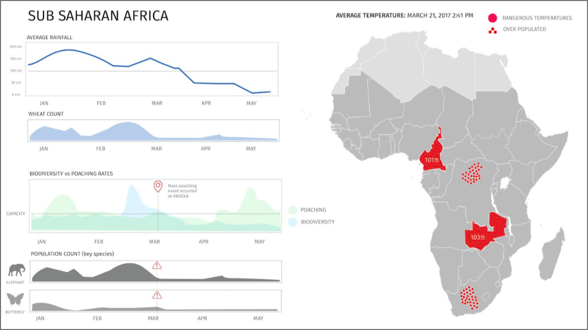
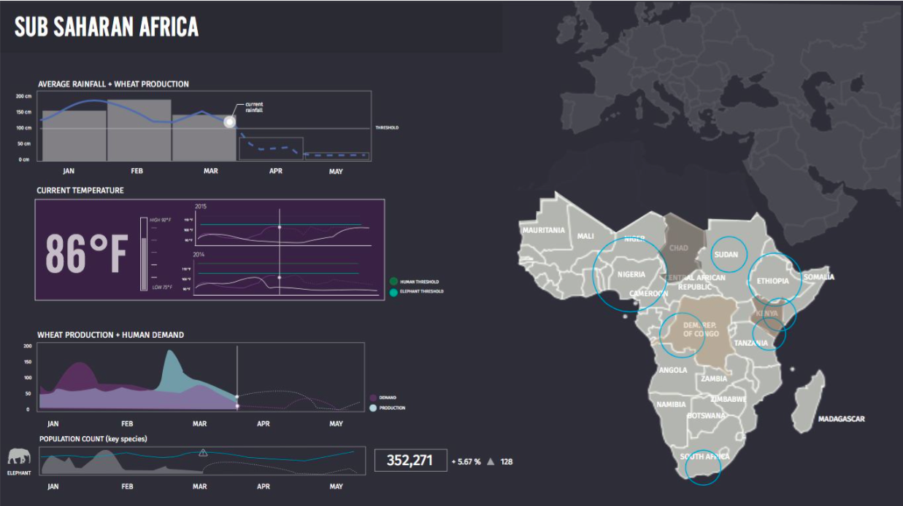
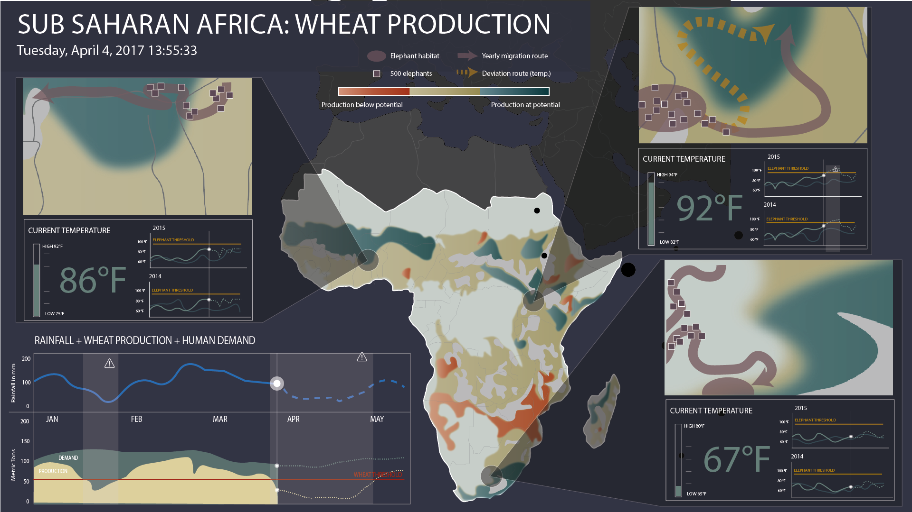

Biodiversity Dashboard
Create a single screen dashboard on the effects of climate change

PROJECT BACKGROUND
Our client for this project was an advisory board of scientists who wanted to see the fruits of their research and monitoring efforts acted upon. The users of the dashboard were national-level policy makers. Our goal was to create a single screen dashboard that expressed the impact that climate change was having on biodiversity for the Sub-Saharan. It should provide policy makers with the information they need to act in terms of modifying current policy or enacting new policy. The users would not be able to interact with the dashboard. Therefore, the only way to alert and grab the user's attention was by using animations.
CLIENTS: SCIENTISTS
Our client for this project is an advisory board of scientists who wanted to stress the important results of their research on climate change and biodiversity and the monitoring efforts that should be acted upon. Their primary goal is to urge the policy makers to take appropriate actions to mitigate the effect that climate change have on biodiversity before it’s too late.

USERS: POLICY MAKERS
Our users are national-level policy makers who are swamped with a lot of information and distraction. They do not have a lot of time to dedicate time to focus on the dashboard.
RESEARCH
We started out by doing online research to understand the effects of climate change on biodiversity. We tried to find different correlations and indicators of climate change and its effects on the land and the people.
KEY INDICATORS
After consolidating all of our findings, we narrowed it down to 5 key indicators that we would add to our one single dashboard screen.
- The agricultural fields and their produce level
- Wheat (a staple crop in the region) production
- Keystone Species - Elephant Migration Pattern
- Temperature in key agricultural regions
- Rainfall in relation to wheat production
INITIAL DESIGNS
From the research we gathered, we sketched different ways to visualize all this data. Below are some of our sketches and drafts we made to see how we can show the correlations with the data we had:
  NEXT ITERATION
From our initial feedback we got, we realized that we lacked a central message. Therefore, for the next iteration, we picked 3 areas with high agricultural yield in profit which were elephant’s migration patterns, temperature, and rainfall.
FINAL DESIGN
For our final design, we made it easier for the users to quickly spot and get alerted about any unusual activities. The dashboard’s point of entry was a quick glance into past, present, and the predicted future of wheat production in relation to the region’s demand. This dashboard will alert policymaker when there is a threat to the wheat production to motivate them to take appropriate actions to mitigate the effect that climate change have on biodiversity before it’s too late.